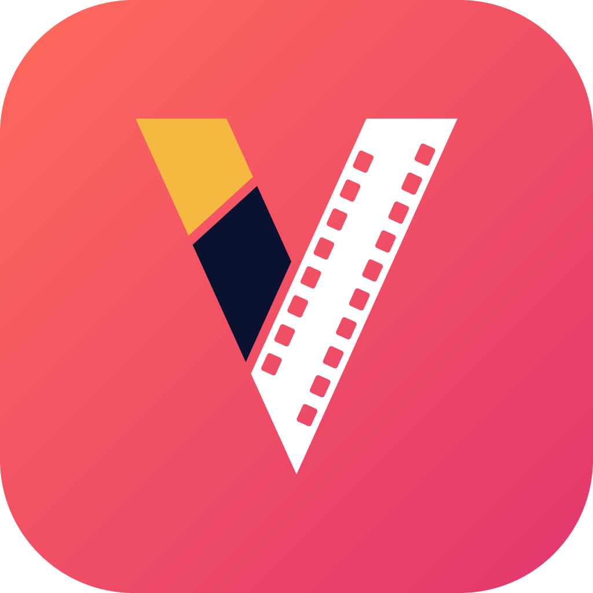

Movelo Studio for MacChinese videos,
Khmer voices.
A Mac app for dubbing Chinese dramas, short videos and ads into Khmer. It translates every line, gives each character a natural voice and keeps the original music.
Movelo Studio runs on Macs. Open this page on your Mac to download it.
The next release is almost ready. Follow releases on GitHub.
Free. Needs macOS 11 or later.
Which one is my Mac?
Open the Apple menu and choose About This Mac. A chip such as Apple M1, M2 or M4 means Apple Silicon; a processor made by Intel means Intel.
Import
Drop in a video. The dialogue is separated from the music.
Transcribe
Every line, timed and matched to its speaker.
Translate
Into Khmer, with every line yours to edit.
Dub and export
Natural voices over the original music, as an MP4.
Transcript
Every line timed, labelled and translated
Studio separates the dialogue from the music, transcribes each line and works out who is speaking, recognising each character by voice and face from the lines you've already checked. Then it translates into Khmer with the scene in view.
- A line it isn't sure about asks “Who is this?”, with its two best guesses
- Start from embedded or .srt subtitles instead
- Detect speakers again at any time, without losing edits
- Translate missed lines without touching the ones you changed
Dubbing
A natural voice for every character
Pick one of 67 ready-made Khmer voices, from young leads and parents to villains, royalty and narrators. They're sorted by age and gender, and tagged by personality and role, so finding one for an actor is quick. Or describe your own, such as “warm, gentle young woman”, or clone one from a ten-second clip. Each character keeps their voice in every episode, and a single line can use a different one.
- 67 ready-made voices, sorted by age and gender
- Voice design from a written description
- Voice cloning from a short clip
- Every line voiced at once, with live progress
你终于回来了。
ទីបំផុតបងក៏ត្រឡប់មកវិញ។
សុំទោសដែលធ្វើឲ្យអូនរង់ចាំយូរ។
Export
One click to a finished MP4
Studio mixes the new voices over the original music and effects, and lays your images and videos over the picture. A transparent sponsor card stays transparent, and its sound is mixed in.
Save an episode's media as a template, and add it to the next episode once it's dubbed.
Everything in the editor
A CapCut-style timeline
Clips as long as their voice, a volume line on each; undo anything.
Music separation
The original soundtrack stays under the dub.
Transcription
Every line timed, with its speaker.
Subtitle import
Start from embedded or .srt subtitles.
Translation
Gemini, with a free fallback for missed lines.
Line review
Edit any line, with the original underneath.
Voice design
Describe a voice in words.
Voice cloning
From a short clip of a voice.
Auto-fit
Voices that run into the next line speed up a little to end on time.
Media tracks
Images and videos over the picture, transparency kept.
Media templates
The same sponsor card on every episode.
Assistant
Suggests line edits you approve one by one.
What you need
Free to download. Bring your own key.
A Mac
macOS 11 or later, with Apple Silicon or an Intel processor. Recognising characters by voice and face needs macOS 13.4 or later.
An internet connection
Most of the AI runs in the cloud: Google's Gemini for transcription and translation, services on Hugging Face for music separation and voices. Recognising characters runs on your Mac.
A Gemini API key
Create one in Google AI Studio and paste it into Settings. Studio uses it only to talk to Gemini.
Your projects, videos and exports stay on your Mac.
Install
Installing it
Movelo Studio isn't notarized by Apple yet, so macOS asks you to confirm it the first time. After that it opens like any other app.
- Open the download and drag Movelo Studio into Applications.
- Open it. When macOS says it can't verify the app, click Done.
- In System Settings, open Privacy & Security, click Open Anyway and confirm with your password.
- In the app, open Settings and paste your Gemini API key from Google AI Studio.
macOS says the app is damaged?
That's macOS's download quarantine, not a broken file. Run this in Terminal, then open the app again.
xattr -dr com.apple.quarantine "/Applications/Movelo Studio.app"
Questions
Anything else? Ask on GitHub.
I use Dubify Studio. What changes?
Dubify Studio is now called Movelo Studio. Your copy updates itself as usual; after the update it's called Movelo Studio, and your projects, voices and settings come with it. There's nothing to reinstall.
Does it run on Windows?
Not yet. Movelo Studio is for Macs with macOS 11 or later.
Which languages does it support?
It's built for Chinese to Khmer: Chinese speech in, Khmer voices out.
Do my videos leave my Mac?
Your projects, videos and exports are saved on your Mac. To do the AI work, the app sends audio and text to cloud services: Google's Gemini API, using your key, for transcription and translation, and services hosted on Hugging Face for separating the music and generating voices. Recognising characters by voice and face happens on your Mac, and nothing is sent anywhere for it.
How do updates work?
Movelo Studio checks for updates when it opens and installs them with one click. You can also choose Check for Updates… in the Movelo Studio menu. Version 0.1.0 can't update itself: download the latest version once and replace it. Your projects are kept.
Why is the first launch slower?
The first time it opens after installing or updating, macOS checks the app, which takes about 15 seconds. After that it opens in a second or two.
Where are my projects stored?
In ~/Library/Application Support/com.movelo.studio. If something goes wrong, the logs in ~/Library/Logs/com.movelo.studio show what happened.
Give your next video a Khmer voice.
Free to download for Mac.